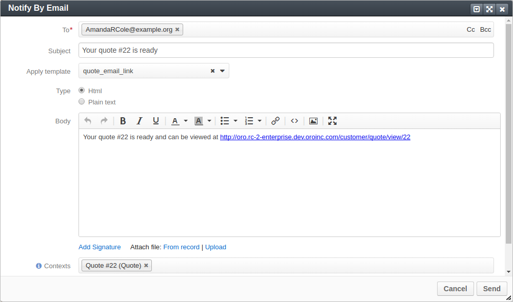

Note
Available options depend on the current status of the quote and your permissions. These actions appear only when all the quote-related workflows are disabled and the default (basic) quote management applies.
Important
This option is available only when:
To edit a quote:
Navigate to Sales > Quotes in the main menu.
Hover over the More Options menu to the right of the item and click the Edit icon to start editing its details.
Important
Note that the icon that starts a workflow looks alike to the Edit icon. Please check the hint that appears when you hoover over the icon to make sure that you select the desired action.
Update the Quote General Information, Line Items, Shipping Address, or Shipping Information sections. See Create a Quote topic for detailed information on the available options.
Click Save on the top right of the page.
The quote is updated.
Learn more ways to edit a quote.
Important
You can send notification to the customer in this way only when the Quote Management Flow / Backoffice Quote Flow with Approvals are inactive.
To notify a customer that their quote is prepared:
In the main menu, navigate to Sales > Quotes.
Choose the quote in the list and click it. The quote details page opens.
Click next to Notify Customer on the top right of the page, and then click Notify By Email.
In the Notify By Email dialog that appears, review the email draft. If required, add additional recipients to the To, CC, or BCC fields, or make other changes. The email body may be adjusted to be more personalized.
Click Send.
Hint
By default, the quote_email_link email template is used for this type of notifications. You can select another one or, if you have corresponding permissions, you can adjust the email template. If you do not have permissions to modify templates, ask your administrator for help.
The quote internal status becomes Sent to Customer.
Important
You can expire a quote in this way only when the Quote Management Flow / Backoffice Quote Flow with Approvals are inactive.
To indicate that the quote’s validity period is over from the quote list:
The quote’s Expired field in the list is now set to Yes.
Learn more ways to expire a quote.
Important
This option is available only when:
Learn more ways to delete a quote.
{kind=link}